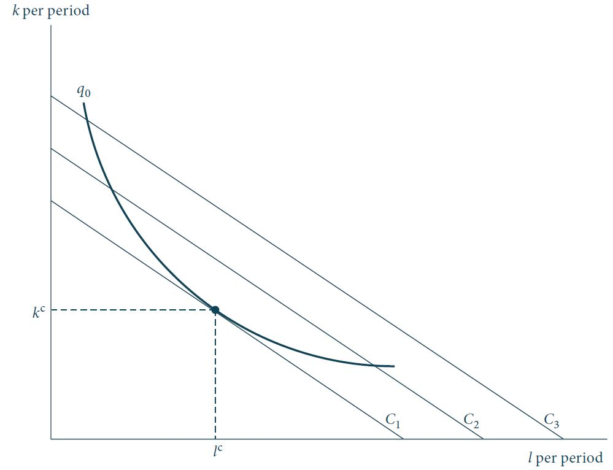

Minimização de custos
Custo econômico \(\times\) custo contábil
Definições
Antes de discutirmos a teoria dos custos, algumas questões sobre a definição adequada de “custos” devem ser esclarecidas.
Especificamente, devemos fazer a distinção entre custo contábil e custo econômico.
Custo contábil. A visão de custo do contador enfatiza as despesas pecuniárias, os custos históricos, a depreciação e outros registros históricos.
Custo econômico. O custo econômico de qualquer insumo é o pagamento exigido para manter esse insumo em seu emprego atual. De maneira equivalente, o custo econômico de um insumo é a remuneração que o insumo receberia em seu melhor emprego alternativo.
Colocaremos as questões de mensuração de lado e utilizaremos os conceitos relevantes para a decisão - custos econômicos - ao longo da análise.
Hipóteses simplificadoras
Estudaremos a minimização e as curvas de custo de uma firma que produz apenas um tipo de produto \(q\) (caso uniproduto) utilizando apenas dois tipos de insumo: trabalho homogêneo (\(l\), medido em horas de trabalho) e capital homogêneo (\(k\), medido em horas-máquina).
Ademais, admitiremos que a firma é tomadora de preços nos mercados de fatores (i.e., os insumos são contratados em mercados perfeitamente competitivos), ou seja, as empresas podem comprar (ou vender) todos os serviços de mão de obra ou de capital que desejarem, sob taxas de aluguel vigentes (\(w\) e \(v\)).
Portanto, a firma paga por unidades dos insumos trabalho e capital os preços exógenos \(w > 0\) e \(v > 0\), respectivamente.
Hipóteses simplificadoras
- Logo, com essas simplificações, o custo total \(C\) para a firma durante o período é dado por: \[\text{Custo total} = C = wl + vk, \qquad(1)\] em que \(l\) e \(k\) representam a utilização dos insumos trabalho e capital, respectivamente, durante o insumo.
Relação entre maximização de lucro e minimização de custos
Maximização de lucro e minimização de custos
Os lucros econômicos (\(\pi\)) serão definidos como a diferença entre a receita total (\(R\)) da firma e seus custos totais (\(C\)).
Suponha que a firma adote o preço de mercado (\(p\)) para a sua produção total (\(q\)) como dada e que sua função de produção é \(q = f(k,l)\). Formalmente, teremos: \[\pi = R - C = pq - wl - vk = pf(k,l) - wl - vk. \qquad(2)\]
Ou seja, os lucros econômicos desta firma são uma função da quantidade de capital e trabalho empregado.
Maximização de lucro e minimização de custos
Supondo que a firma tem como objetivo a maximização de lucros, então, podemos estudar seu comportamento examinando como \(k\) e \(l\) são escolhidos de maneira a maximizar a Equação 2.
Isso, por sua vez, levaria a uma teoria da oferta e uma teoria da “demanda derivada” para os insumos de capital e mão de obra.
Nosso objetivo, agora, é desenvolver uma teoria dos custos que seja um pouco mais geral, aplicando-se não só às firmas tomadoras de preços no mercado de bens (concorrência perfeita) mas, também, àquelas cuja escolha de produção afeta o preço de mercado (monopólios e oligopólios).
Suposição comportamental
As condições derivadas para as opções de insumos minimizadores de custo surgirão, novamente, como um subproduto da análise da maximização de lucros na próxima seção dos nossos estudos.
Para isso, iremos supor que a firma é maximizadora de lucros. Logo, a combinação de insumos ótima (\(k^*, l^*)\), associada ao plano de produção maximizador de lucro \((-k^*, -l^*, q^*)\), deve ser minimizadora de custos, pois se não fosse, haveria outro plano de produção envolvendo um menor custo e, portanto, um maior lucro.
Minimização de custos
Análise formal
Isocusto. Isocusto é o conjunto \(\{(k,l) \in \mathbb{R}_+^2| vk + wl = C\}\) formado por todas as combinações de insumos \((k,l)\) que geram o mesmo custo total \(C \geq 0\).
A isocusto associada ao custo total \(C\) pode ser descrita pela equação da reta: \[k = \frac{C}{v} - \frac{w}{v}l,\] cuja inclinação (coeficiente angular) é o negativo da razão entre os preços dos fatores de produção, \(-w/v\).
Minimização de custos: análise formal
Problema da minimização de custos. A firma deve escolher a combinação de insumos \((k^*, l^*)\) para atingir uma meta de produção \(q_0\) com o menor custo possível.
Ou seja, a firma deve resolver o seguinte problema de minimização de custos: \[\begin{aligned} \min_{(k,l)} & \quad wl + vk, \\ \text{s.r.} & \quad f(k,l) = q_0. \nonumber \end{aligned} \qquad(3)\]
Minimização de custos: análise formal
A função Lagrangeana associada ao problema de otimização restrito Equação 3 é dada por: \[\mathcal{L} = wl + vk + \lambda[q_0 - f(k,l)]. \qquad(4)\]
As condições de primeira ordem para um ponto de mínimo restrito são dadas por: \[\begin{aligned} \frac{\partial \mathcal{L}}{\partial l} &\therefore& w - \lambda \frac{\partial f}{\partial l} = 0, \nonumber \\ \frac{\partial \mathcal{L}}{\partial k} &\therefore& v - \lambda \frac{\partial f}{\partial k} = 0, \\ \frac{\partial \mathcal{L}}{\partial \lambda} &\therefore& q_0 - f(k,l) = 0. \nonumber \end{aligned} \qquad(5)\]
Minimização de custos: análise formal
Dividindo as duas primeiras equações do sistema Equação 5, temos: \[\frac{w}{v} = \frac{f_l}{f_k} = TTS(l,k). \qquad(6)\]
Ou seja, no caso padrão (tecnologia estritamente convexa e isoquanta continuamente diferenciável), na escolha minimizadora de custos \((k^*, l^*)\) a isocusto é tangente à isoquanta, de maneira que suas inclinações são iguais.
A firma minimizadora de custos deve igualar a TTS dos dois insumos à razão de seus preços.
Minimização de custos: análise formal
Figura 1: Condição de tangência entre isoquanta e isocusto no ponto de minimização de custos. Fonte: Nicholson e Snyder (2019).
Minimização de custos: análise formal
Note que a igualdade na Equação 6 pode ser expressa como segue: \[\frac{f_k}{v} = \frac{f_l}{w}. \qquad(7)\]
Ou seja, para que os custos sejam minimizados, a produtividade marginal por cada unidade monetária dispendida deve ser a mesma para todos os insumos.
Qualquer insumo que não satisfazer essa razão custo-benefício comum não deve ser selecionado.
Minimização de custos: análise formal
Alternativamente, podemos, ainda, escrever a condição de igualdade da seguinte forma: \[\frac{w}{f_l} = \frac{v}{f_k} = \lambda. \qquad(8)\]
A Equação 8 mostra o custo extra de se obter uma unidade a mais de produção, selecionando mão de obra ou entrada de capital adicional.
Por causa da minimização de custos, esse custo marginal é o mesmo, independentemente do insumo selecionado.
Esse custo marginal comum também é medido pelo multiplicador de Lagrange \(\lambda\) do problema de minimização de custos.
Como é o caso de todos os problemas de otimização restrita, o multiplicador de Lagrange mostra o quanto se incorreria, em termos de custos extras, caso a restrição de produção fosse relaxada levemente.
Função demanda condicional de fatores
- Função demanda contingente de insumos. Se a isoquanta é estritamente convexa, existe uma, e somente uma, combinação de insumos ótima \((k^*, l^*)\) que resolve o problema de minimização de custos, a qual é uma função contínua dos preços \((v, w) \in \mathbb{R}_{++}^2\) e da meta de produção \(q \geq 0\), ou seja: \[\begin{aligned} k &=& k^c(v, w, q), \\ l &=& l^c(v, w, q). \end{aligned} \qquad(9)\]
Funções custo
Função custo total. A função custo total mede o custo total mínimo de produzir \(q\) unidades de um bem quando os preços dos fatores de produção são \((v, w) \in \mathbb{R}_{++}^2\) e a tecnologia de produção é \(f(k,l)\): \[C = C(v, w, q). \qquad(10)\]
A função custo é obtida substituindo a função demanda contingente de insumos na função objetivo do problema de minimização de custos, ou seja: \[C(v, w, q) = v k^c(v, w, q) + w l^c(v, w, q). \qquad(11)\]
Custo médio e custo marginal
A função custo médio (AC) é o custo mínimo total por unidade produzida: \[\text{Custo médio} = AC(v, w, q) = \frac{C(v, w, q)}{q}. \qquad(12)\]
A função custo marginal (MC) é a variação do custo total mínimo gerada pela variação de uma unidade de produção: \[\text{Custo marginal} = MC(v, w, q) = \frac{\partial C(v, w, q)}{\partial q}. \qquad(13)\]
Propriedades das funções custo
A função custo total satisfaz as seguintes propriedades:
\(C(v, w, 0) = 0\).
\(C(v, w, q)\) é estritamente crescente em \(q\).
\(C(v, w, q)\) é não-decrescente nos preços dos insumos \(v\) e \(w\).
\(C(v, w, q)\) é homogênea de grau 1 nos preços dos insumos \(v\) e \(w\), isto é: \[C(tv, tw, q) = tC(v, w, q), \forall t > 0. \qquad(14)\]
A função custo total é côncava nos preços dos insumos \(v\) e \(w\).
Lema de Shephard: \[\begin{aligned} \frac{\partial C(v, w, q)}{\partial v} &=& k^c(v, w, q), \\ \frac{\partial C(v, w, q)}{\partial w} &=& l^c(v, w, q). \end{aligned} \qquad(15)\]
Exercícios
Encontre as funções de demanda contingente de insumos, e custo total das seguintes funções de produção:
- Cobb-Douglas \[q = f(k,l) = k^\alpha l^\beta.\]
- Função CES \[q = f(k,l) = (k^\rho + l^\rho)^{\gamma/\rho}.\]
- Tecnologia linear \[q = f(k,l) = \alpha k + \beta l.\]
- Leontief \[q = f(k,l) = \min(\alpha k, \beta l).\]
📚 Bibliografia
NICHOLSON, W.; SNYDER C. Teoria microeconômica: Princípios básicos e aplicações. Cengage Learning Brasil, 2019. Disponível em: app.minhabiblioteca.com.br/books/9788522127030
VARIAN, H. R. Intermediate Microeconomics: A modern approach. 7.ed. New York: W.W. Norton & Company, 2006.
MAS-COLELL, A.; WHINSTON M.D.; GREEN, J.R. Microeconomic Theory. New York: Oxford University Press, 1995.